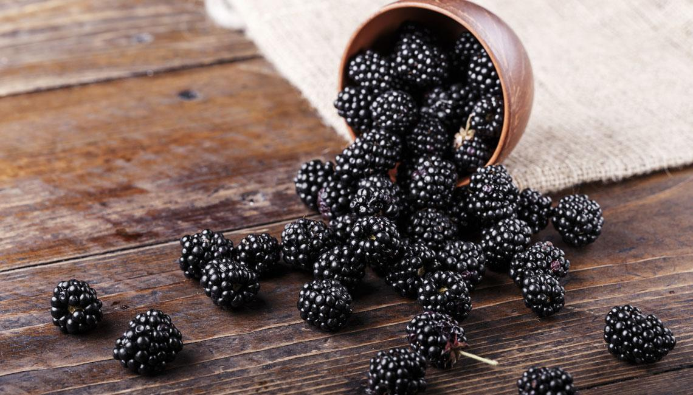
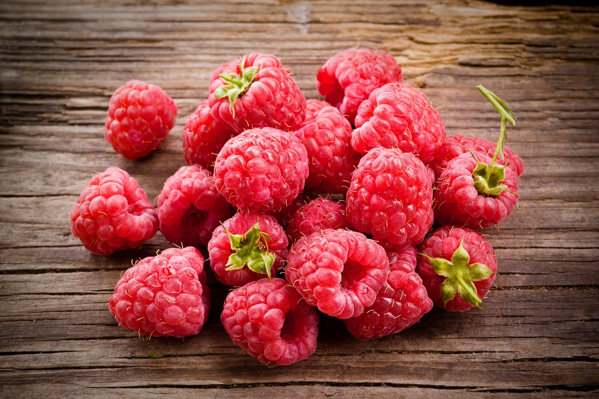
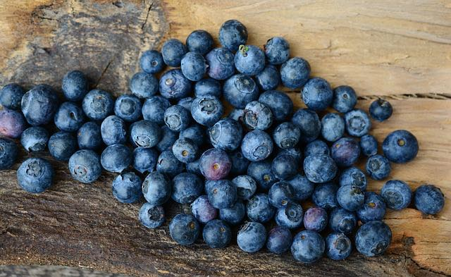

|
|
|---|---|
FRESAS Aporta potasio, calcio, fósforo, manganeso, cobre y silicio, por lo que es un alimento muy indicado en curas de remineralización y en el tratamiento de déficits nutricionales. Previene la aparición de enfermedades cardiovasculares, hipercoloesterolemia, arteroesclerosis, mejoran nuestra capacidad antiviral, retrasan el envejecimiento cerebral y ayudan a prevenir el alzheimer. En cuanto a las personas con diabetes, las fresas ayudan a prevenir los riesgos de la diabetes tipo 2. |
.jpg) |
|---|---|
MORAS Las moras son un alimento que cuentan con una amplia gama de nutrientes importantes, son una fruta a la que se debe acudir con frecuencia, sobre todo si se sigue una dieta de pérdida de peso, porque su contenido en azúcar es muy bajo. Y por la presencia de las vitaminas C y A contribuyen a nutrir los huesos, los dientes, la piel, la generación de colágeno o la absorción de hierro. Se encuentran minerales como potasio, magnesio, manganeso y calcio. |
 |
FRAMBUESAS Las frambuesas se destaca por controlar los efectos de la diabetes, ya que la fibra que tienen hace que influya positivamente en mantener estable el azúcar en la sangre. También, beneficia la pérdida de peso, ya que es diurética y favorece el tránsito intestinal. |
 |
ARANDANOS Los arandanos tienen un alto contenido en antioxidantes los cuales, entre otros beneficios, combaten el envejecimiento prematuro neutralizando los radicales libres, combaten inflamaciones, son buenos para el corazón, la vista, la memoria y en dietas de pérdida de peso. También actúan contra las infecciones digestivas. |
 |
CEREZAS Las cerezas ayudan a reducir el ácido úrico y reducir el dolor de las articulaciones. |